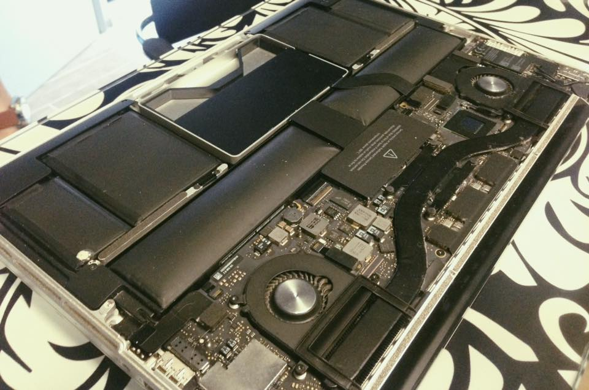

Вчера заменил на макбуке аккумулятор. Он, к сожалению, внезапно вздулся спустя 4 года работы.

Вздувшиеся аккумуляторы на макбуке, замена которых стоит 8000 рублей, выглядят так. Знакомьтесь.
Замена аккумулятора стоила недёшево — 8 тысяч рублей. И, вы знаете, я редко расстаюсь с деньгами с такой лёгкостью (а я — скопидом).
Сыну я часто (в основном без успеха) говорю: перед тем как что-то сделать, подумай — это создаёт кому-то проблемы, или решает их?
Так вот, в отличие от других компьютеров, которые то и дело обременяют своих владельцев пустыми хлопотами, макбук все эти годы только решает мои проблемы. И дело не только в железе (спустя 4 года ежедневной эксплуатации он выглядит как новый). Дело, конечно, ещё и в философии мака, в архитектуре приложений для него.
На ту работу, которую на другом компьютере можно делать часами, у пользователя макбука уходит 10 минут. Макбук не подходит для тех, кому платят за нахождение на работе, или по часам.
Запомните, там где вы хлопаете мышкой по столу, или нервно стучите по клавиатуре, — пользователь макбука уже наливает себе чай, отправив работу заказчику.
Макбук для тех, кто настроен на результат, но любит наслаждаться процессом.